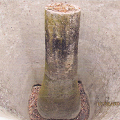
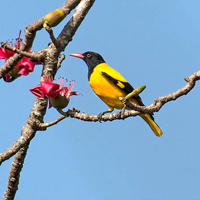

-
Introduction
Wildlife Division, Hazaribag, one of the prominent wildlife division of Jharkhand, was constituted vide notification no.- VANYA PRANI - 17/2002-5467 dated 26.11.2002. This includes seven sanctuaries.
The Forest area of the division 707.60 sq. km. These Sanctuary areas are rich in Bio-diversity and are hot spots for tourists willing to have thrilling experience of wilderness.
Wildlife Santuaries in Hazaribag Division
-

Forest OFFICE
From the desk of Wildlife Division Hazaribag, D.F.O's desk...
-
Lawalong WLS
Located in Chatra district it has a forest area of 211 sq. km. Lawalong provides...
-

Hazaribag WLS
A wildlife sanctuary covering an area of 186.25 sq. km. situated on a densly forested...
-

Koderma WLS
Just about 2 km from the district headquaters Koderma this sanctuary...
-

Gauttam Buddha WLS
Located within Hazaribag district has an area of 100.00 sq. km...
-
ParasNath WLS
Situated in south east part of Giridih District and about 25 km away from Giridih town...
-
Topchanchi WLS
Situated at the foot hills of majestic Parasnath...
-
Udhuwa LBS
Situated at about 117km from Bhagalpur and about 42km from Sahebganj...
-
Feeding babies
This video shows wildlife staffs feeding diffrent confesticated animal babies...
{kind=link}